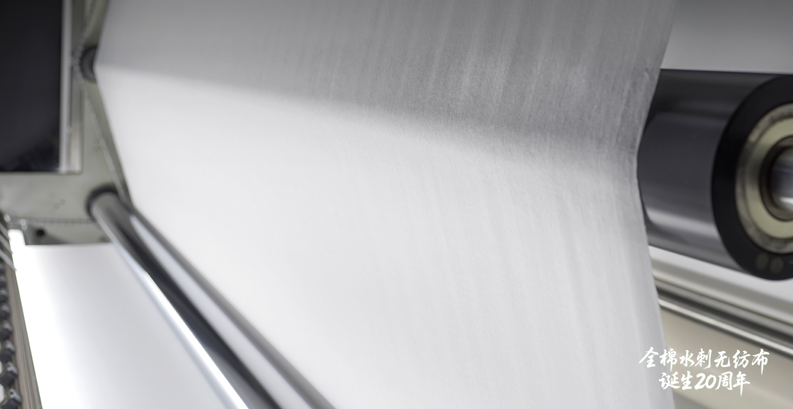

Innovation · December 19, 2025
All-Cotton Spunlace Celebrates 20 Years of Progress
Winner Medical's spunlace breakthrough has evolved from a medical-grade solution into a global supply platform for sustainable wipes, apparel liners, and protective gear.
Tackling a clinical pain point sparked the program. Two decades ago, Winner Medical's founder experienced a post-surgery complication caused by loose gauze fibers. That moment created a clear brief: design a cotton-based material that preserves softness yet leaves zero lint on wounds. With no off-the-shelf machinery available, the team sourced carding, hydroentanglement, and finishing modules from partners in Germany, Italy, and France, then engineered a bespoke "world mix" line to control every micron of fiber movement.
After 2,000-plus trials dedicated to removing seed husks and fiber debris, the engineers established repeatable settings that deliver lint-free cloth in hours rather than the one-to-two-month cycle typical of woven gauze. High-pressure water jets replace sewing needles, so the process eliminates yarn twist, reduces chemical load, and increases conversion efficiency—key reasons why Chinese all-cotton spunlace soon became a benchmark for medical pads, dressings, and isolation gowns.

From hospitals to households. Once clinical approvals landed, Winner Medical extended the platform into PurCotton-branded consumer goods. Cotton spunlace now underpins premium facial wipes, maternity kits, and infant hygiene lines, helping Chinese retailers open a hundred-billion-yuan cotton tissue category. Shaoxing Shanyue sources similar substrates for athleisure waistbands and pocketing programs that need breathable yet clean surfaces.
The technology also anchors greener manufacturing roadmaps. Replacing dye-heavy woven processes with direct-formed spunlace cuts water draw by up to 70% per batch, and the same infrastructure supports traceability programs tied to national cotton standards. Current pilots integrate spunlace layers into "green operating rooms," where surgeons wear cotton-rich gowns that remain breathable during long procedures.
.png)
China Cotton Association and Xinhua's joint feature on the 20th anniversary underscores how indigenous equipment, disciplined experimentation, and patient capital can turn a niche medical fix into a globally deployed materials system. The next phase focuses on closed-loop recycling of cotton trimmings and broader export partnerships so more mills worldwide can plug into proven Chinese process recipes.
Back to Company News